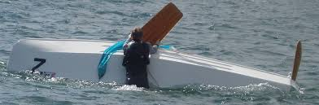

Safety Guide
Top 10 Reasons for Capsizing During a Gybe in a GP14
Master the gybe and stay upright with these proven prevention techniques
October 20, 2025
12 min read
The gybe is one of the most dynamic and potentially dangerous maneuvers in GP14 sailing. Understanding why boats capsize during gybes—and how to prevent it—is essential for safe downwind sailing and competitive racing. This guide breaks down the top 10 causes of gybe capsizes and provides proven prevention techniques.
1
Failure to Depower Before the Gybe
Most Common Cause
What Happens
- The mainsheet is held too tight while bearing away
- As the boat passes dead downwind, the main fills violently on the new side
- The sudden shift in the centre of effort heels the boat hard to leeward
Prevention
- Ease the mainsheet slightly before turning
- Ease the kicker a little (20–30% of upwind load) to let the boom lift and twist
- Keep the boat flat or with a touch of windward heel through the gybe
2
Poor Weight Transfer
What Happens
- Helm and/or crew cross too late or too slowly
- Boom crosses while both are still on the old side
- Boat rolls rapidly to leeward
Prevention
- Cross the boat as the boom starts to move
- Stay low and smooth, not jumping upright
- Move in sync so the boat stays under the rig
3
Too Much Heel Entering the Gybe
What Happens
- The boat begins the turn heeled to leeward
- When the boom crosses, the roll accelerates and capsizes follow
Prevention
- Flatten the boat before bearing away
- Initiate the gybe from flat or slight windward heel
- Keep weight moving early to balance the rig
4
Over-Tight Kicker or Over-Sheeted Main
What Happens
- The boom can't rise or twist as it crosses
- It slams into the new side, loading the leech and throwing the boat over
Prevention
- Ease the kicker before the gybe so the boom swings freely
- Ease the mainsheet slightly to prevent shock load
- Re-tension the kicker and main after the boom settles
5
Turning Too Fast
What Happens
- Helm bears away too quickly; apparent wind shifts too abruptly
- The main fills explosively, knocking the boat flat
Prevention
- Steer smoothly and progressively
- Keep rudder loads light — let the sails lead the rotation
- Aim for a steady, even rate of turn
6
Boom or Blocks Hit the Water
What Happens
- As the boat rolls, the boom tip or mainsheet blocks touch the surface mid-gybe
- Water drag halts the boom while the boat keeps turning → instant windward capsize
Prevention
- Keep the boat flat
- Ease kicker enough to let the boom lift as it crosses
- Watch mainsheet blocks — don't let them drag in the water
7
Weight Too Far Aft
What Happens
- Crew stay too far back; stern squats, rudder stalls mid-turn
- Boat broaches or rolls violently
Prevention
- Move slightly forward during the gybe
- Keep weight around the thwart area, not the transom
- Maintain even fore-aft trim
8
Uncontrolled Spinnaker
What Happens
- Spinnaker still drawing as the main gybes → opposing forces, sudden roll
- Or sheets wrap, pulling the bow off balance
Prevention
- Ease spinnaker sheet before main crosses
- Gybe pole/kite cleanly after the main is across
- Keep communication clear between helm and crew
9
Bad Wave Timing
What Happens
- Gybe coincides with a wave crest or trough; rudder loses bite
- Apparent wind swings unpredictably; boom slams or boat broaches
Prevention
- Time gybes on flatter water, not mid-surf
- Maintain boat speed for steerage
- Use small, steady helm inputs
10
Lack of Awareness After the Gybe
What Happens
- Focus on sheets/pole, not heel
- Boat rolls after boom crosses, no correction → delayed capsize
Prevention
- Keep eyes up; monitor heel and boom position
- Counter-roll gently as the sail fills
- Trim sheets quickly to stabilise
Quick Reference Summary
| Cause | Likely Roll | Key Prevention |
|---|---|---|
| Mainsheet/kicker too tight | Leeward | Ease main & kicker before gybe |
| Late body movement | Leeward | Cross as boom starts moving |
| Leeward heel entering | Leeward | Flatten first |
| Boom hits water | Windward | Ease kicker; keep flat |
| Over-steer | Leeward | Smooth, gradual turn |
| Weight too far aft | Either | Move forward slightly |
| Spinnaker mis-timed | Leeward | Ease kite before gybe |
The 4-Step Gybe Safety Sequence
Ease → Steer → Move → Trim
1
Ease
Ease kicker & mainsheet to depower before turning
2
Steer
Steer smoothly and progressively through the turn
3
Move
Move body weight across as boom starts moving
4
Trim
Trim sails and flatten boat after boom crosses
Keywords: GP14 gybe, gybe capsize prevention, GP14 downwind sailing, gybe technique, GP14 boat handling, sailing safety, GP14 racing techniques, boom control, weight transfer, spinnaker gybe